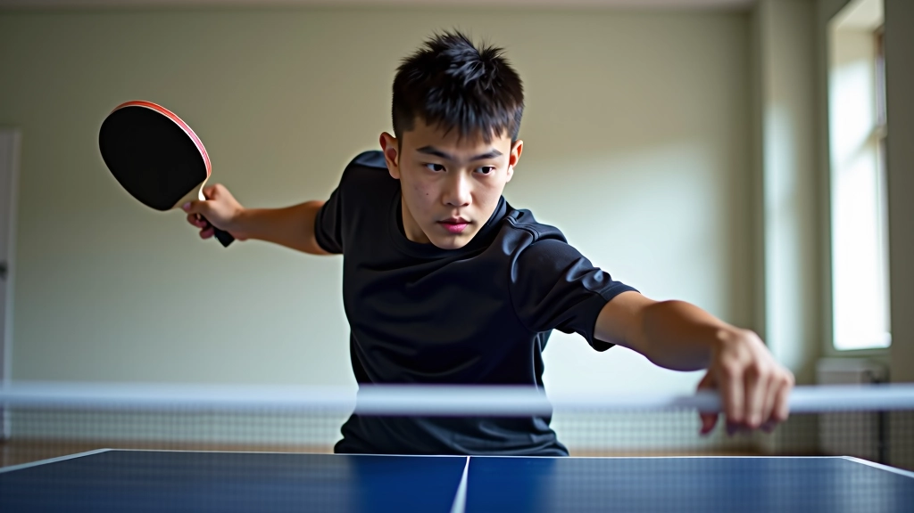
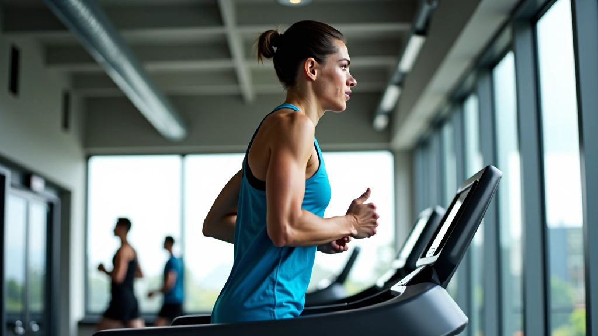
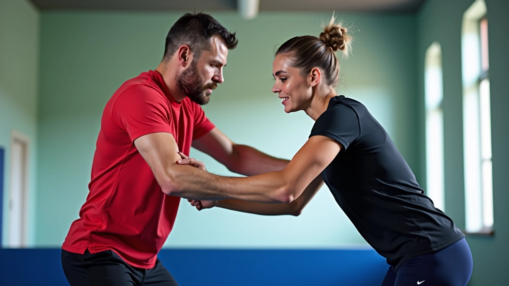

أساسيات الموقف والقبضة الصحيحة
تعلم كيفية اتخاذ الموقف الصحيح وحمل المضرب بطريقة احترافية لتحسين أدائك وتجنب الإصابات.
برامج تدريبية شاملة تجمع بين التدريبات على الطاولة والتمارين البدنية لتطوير التحمل والسرعة والمرونة
التدريب الجيد ليس فقط عن الضربات والحركات على الطاولة. في الحقيقة، اللاعبون الذين يفوزون بالبطولات هم من يملكون جسماً قوياً وتحملاً ممتازاً وسرعة استجابة عالية. هذا ما يفصل بين اللاعب المتوسط واللاعب الجاد الذي يطمح للتنافس على المستويات العالية.
برنامج التدريب والتحضير البدني يجمع بين ما تفعله على الطاولة وما تفعله في صالة الجيم. نحن هنا نشرح كيف تبني جسماً جاهزاً للمنافسة، وليس فقط لاعباً يعرف الحركات.
التحضير البدني ليس مجرد الركض أو رفع أثقال عشوائياً. إنه نظام مدروس يركز على ثلاثة أشياء أساسية: التحمل اللاهوائي، القوة الانفجارية، والمرونة. في تنس الطاولة، تحتاج إلى أن تكون قادراً على الحركة السريعة لمدة 30 دقيقة دون أن تشعر بالإرهاق. هذا يتطلب قلباً قوياً وعضلات محضرة بشكل صحيح.
يبدأ البرنامج بفهم احتياجاتك الخاصة. ليس كل لاعب متشابهاً. قد تحتاج أنت إلى قوة أكثر في الساقين، بينما زميلك قد يحتاج إلى تحسين سرعة الاستجابة. لهذا السبب، أفضل برامج التدريب تبدأ بتقييم أولي.


جلسات منتظمة من الركض أو السباحة أو تمارين القلب. نحن نتحدث عن 3 أيام أسبوعياً لمدة 30-45 دقيقة. الفكرة أن قلبك يصير قادراً على ضخ الدم بكفاءة حتى تحت الضغط.
ركز على الساقين والأساس (core) والكتفين. جلستان أسبوعياً كافيتان. لا تحتاج إلى وزن ثقيل جداً — الأهم هو التحكم والانضباط في الحركة. ستشعر بالفرق بعد 4 أسابيع.
تمارين الاستطالة يومياً، وخاصة بعد التدريب. 10-15 دقيقة كفاية. لاعب مرن يتحرك أفضل، يصاب بإصابات أقل، ويستجيب أسرع للكرات الصعبة.
ليست كل الأيام متساوية. يوم السبت قد تركز على التحمل، بينما يوم الاثنين قد تركز على القوة. الفكرة هي إعطاء العضلات وقتاً للتعافي بين الجلسات الثقيلة.


كل أسبوعين، اختبر نفسك: كم دقيقة يمكنك الركض بدون توقف؟ كم تكرار تستطيع في تمرين معين؟ التقدم البطيء هو التقدم الحقيقي.
يبدأ الكثيرون بأوزان ثقيلة جداً ويصابون. ابدأ خفيفاً، أتقن الحركة، ثم زد الوزن تدريجياً. 8-12 تكرار لكل تمرين كافٍ في البداية.
7-8 ساعات نوم يومياً ليست ترفاً. هذا حيث تتعافى عضلاتك وتقوى. بدون نوم كافٍ، كل التدريب الشاق لا يعطيك النتائج المطلوبة.
تدريب متوسط الشدة 4 أيام أسبوعياً أفضل من تدريب شديد يومين ثم توقف. جسمك يستجيب للنمط المنتظم أكثر من الجهود المتقطعة.
الفرق بين اللاعب الذي يفوز في البطولات واللاعب الذي يخرج مبكراً ليس دائماً في الموهبة. غالباً ما يكون في الاستعداد البدني. عندما تدخل المباراة بجسم قوي وتحمل عالي وحركية جيدة، أنت تدخل بثقة مختلفة. الخصم يشعر بهذا.
ابدأ الآن. لا تنتظر "الموسم القادم" أو "الشهر المقبل". اختر برنامجاً، التزم به لمدة 6 أسابيع على الأقل، وراقب التغيير. ستشعر بقوة أكبر على الطاولة، وسرعة أفضل في الحركة، وتحملاً أطول في المباريات. هذا هو المقصود من التحضير البدني الحقيقي.
المعلومات الواردة في هذا الدليل هي لأغراض تعليمية عامة فقط. قبل البدء في أي برنامج تدريبي جديد، خاصة إذا كان لديك أي حالة صحية سابقة أو إصابة، يُنصح بشدة استشارة مدرب متخصص أو طبيب رياضي. كل لاعب له احتياجات فريدة، والبرنامج يجب أن يكون مناسباً لظروفك الشخصية.

فريق المحتوى التحريري
أعده فريق أكاديمية الطاولة التحريري، المتخصص في توفير إرشادات عملية وموثوقة لتحضير اللاعبين للبطولات.
تابع رحلتك في تعلم تنس الطاولة
تعلم كيفية اتخاذ الموقف الصحيح وحمل المضرب بطريقة احترافية لتحسين أدائك وتجنب الإصابات.

خطوات تفصيلية لإتقان الضربة الأمامية والخلفية والدوران والقطع. يركز على الأخطاء الشائعة وكيفية تصحيحها.

نصائح عملية عن التغذية السليمة والنوم الكافي والتعافي بين الجلسات. تتضمن استراتيجيات ذهنية للتركيز تحت الضغط.